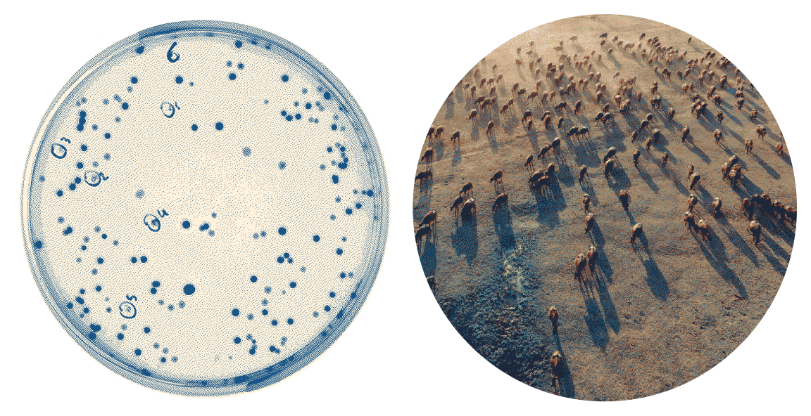

In the face of climate change and the dawn of the Anthropocene, we as humans are constantly challenged to reflect on our impact over our planet and to perceive the interconnections among the many forms of life that inhabit it. Recently, ideas such as the concept of hyperobject, defined by philosopher Timothy Morton as an entity that is challenging to visualize due to its scale (whether too large or too small, or both) have shed light on the need to transcend the narrow human scale to counteract the climate crisis.
Macromicroscopio is an art installation project that provokes us to readjust our gaze and expand it across different temporal and spatial scales through data visualization. Drawing from biodiversity data within the Living Planet Index database we visualize the population numbers of different species that cohabit this planet over time, while simultaneously displaying NASA's surface temperature anomaly data from 1950 to 2020.
Through the representation of entire populations of animal species as animated points with random movements, we allude to the imagery of petri dishes — symbols of the unseen small, now utilized to visualize the vastness that eludes our immediate perception. Concurrently, by visualizing the temperature data through the color tonality of the image, we metaphorically portray an environment under warming conditions where diverse life forms are affected by human impact.
While the project invites viewers to expand their spatial scale perception through the petri dish metaphor, the extended duration of the animation encourages temporal scale dilation. We invite spectators to immerse in the hypnotic motion, to observe the loss in biodiversity over the years, and to ponder the potential correlations between the many data points visualized.
Through this experience, we hope spectators may lose sight of the gradual and subtle shifts in hue — the transformation from cool blues to intense fiery reds that denote the slow-burning process of climate change.
Thus, we employ data visualization, a critical technology for diagnosing the climate crisis, not to communicate immediate decision-making data but to challenge our perception of our place on the planet, the impacts of our actions, and to suggest an understanding of ecological entanglement among life forms.
Macromicroscopio aims to ignite a deepened awareness of the interconnectedness of living creatures in our ecosystem, to inspire reflection and promote a greater understanding of the profound effects of our actions on the world around us and the role data visualization may play in this scenario.
Macromicroscopio is the final dissertation project of Rodolfo Almeida, developed in 2023 under supervision from Dr. Doris Kosminsky and in collaboration with developers Ariel Tonglet and Eduardo Maluf de Campos.
It is part of the research It is part of the research “Visualizing the Unimaginable: hyperobjects and data visualization on the Anthropocene” It is part of the research , conducted at the LabVis laboratory, for the Post-Graduation Program in Design (PPGD) of the School of Fine Arts (EBA) of the Federal University of Rio de Janeiro (UFRJ).
This video installation was shown at the Information XYZ exhibition, as a part of the Information+ Conference, which took place in November 2023 at Inspace, a part of the Institute of Design Informatics within the University of Edinburgh, Scotland.
This visualization was created in Cables.gl with data wrangling and analysis done in R stats. Code available at this GitHub repository.
This project is purely educational and has no commercial purpose. If you’d like to talk about, feel free to reach out at rodolfoalmd@gmail.com!